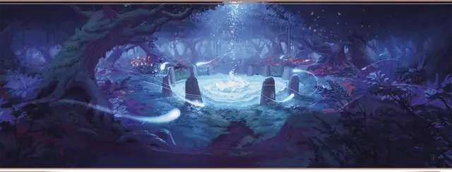

Пилигрим лунного колодца
Moonwell Pilgrim

Характеристики Телосложение, Мудрость, Харизма
Черта Посвящённый в магию
Навыки Выступление, Природа
Инструменты Инструменты художника
Снаряжение Выберите А или Б: (А) Боевой посох, Инструменты художника, Спальник, Колокольчик, Кошель, Мантия, Леска, Дорожная одежда, Бурдюк и 34 ЗМ; или (Б) 50 ЗМ
Как и многие другие выходцы с островов Муншэй, вы впитали почтение к этой благословенной земле, её богам и к таинственным святилищам, называемым лунными колодцами. Вы взяли на себя обязательство посетить и поговорить с каждым лунным колодцем, известным и неизвестным. В этих идиллических путешествиях вы собрали целый репертуар народных муншэйских песен, нарисовали немало ландшафтов чарующих видов и даже немного научились использовать первобытную магию.